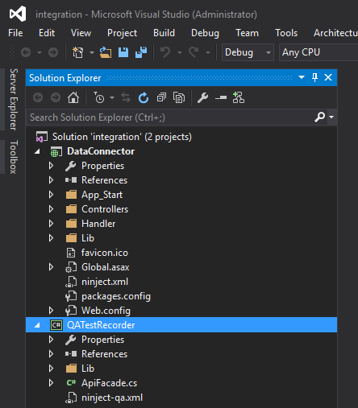
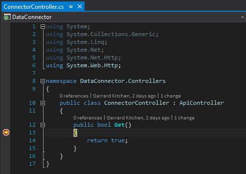

Install API¶
Note
You will need Visual Studio 2013 and PostMan
Download RESTful api middleware¶
You can clone the git repository by:
git clone git@github.com:qualtrak/data-connector-api.git
Next, please clone our same recorder connector. This connector is what we use for QAing:
git clone git@github.com:qualtrak/recorder-qa.git
Next, create a Visual Studio solution and add these 2 projects. Your solution will look similar to this:
Prepate the solution¶
Select the solution name in the Solution Explorer, right-click and enable Nuget
Next, open up the Package Manage Console and enter in:
Update-Package -Reinstall -ProjectName DataConnector
Now build the solution.
Next, navigate to the recorder-qa\bin\Debug folder and copy the QATestRecorder.dll binary then paste it into data-connector-api\bin folder.
Important
When you develop your own recorder you must update the mappings in the ninject.xml file. More on this later.
We don’t have to change the ninject.xml file now as the default contains the mappings to this QATestRecorder assembly.
Finally, rebuild the solution. You are now ready to run and serve up the DataConnector RESTful api.
Confirm middleware deployment works¶
Expand the Controllers folder in DataConnector project and open the ConnectorsController class. Place a brakepoint on the Get method.
Select the DataConnect project, right-click and Set as StartUp Project. Now run the solution
Copy the address, in my example it is http://localhost:20908/, into PostMan and press Send:
You’ll see the brakepoint hit:
